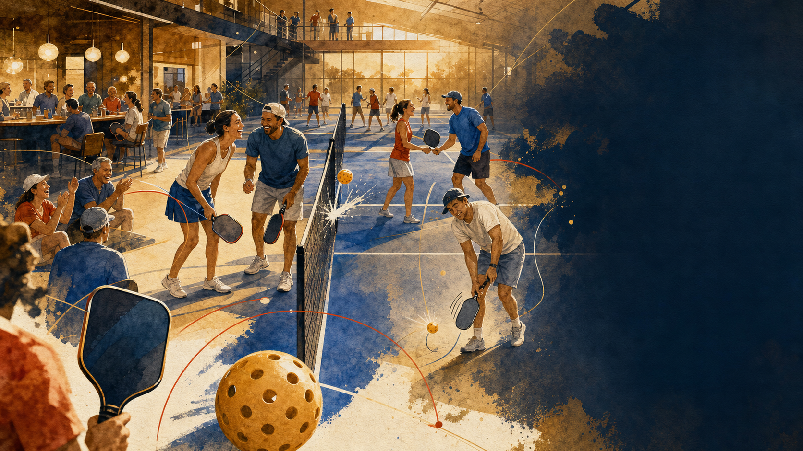
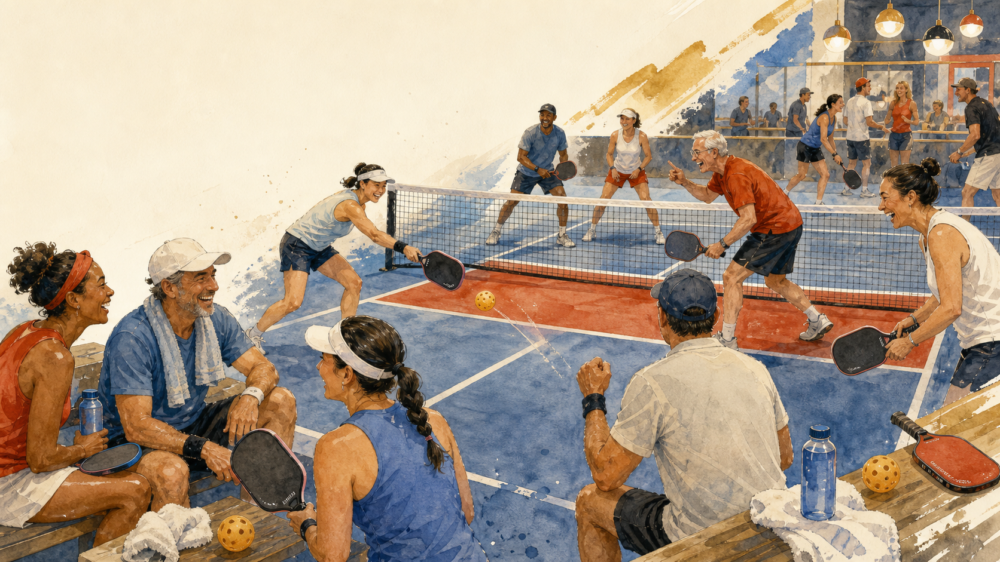

Candidate A - Social Diorama
Wide-angle court-level view. Main court and lounge both visible. Strong left negative space. Best default candidate.
Silliness Signal Candidates
Candidate A is wired into the deck as final.png. Run the generator again with OPENAI_API_KEY set to replace these seed assets with fresh image-model candidates.

